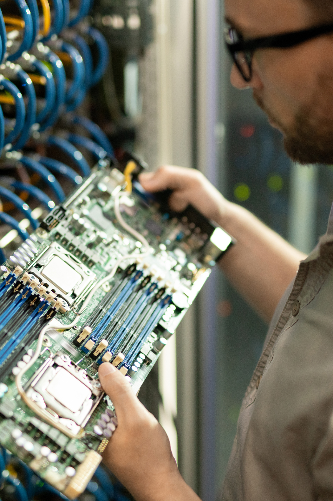

MULTITECH FIELD: A Força da Tecnologia ao Seu Alcance em Aracaju-SE
Sua tecnologia funcionando perfeitamente, sempre. A MULTITECH FIELD é sua parceira confiável em soluções de TI em Aracaju, oferecendo suporte ágil, especializado e personalizado para residências e empresas. Não importa o desafio, temos a solução!

Quem Somos: Paixão por Tecnologia e Compromisso em Aracaju
A MULTITECH FIELD nasceu da necessidade de oferecer um suporte técnico de informática em Aracaju-SE que realmente faça a diferença. Somos uma equipe de profissionais apaixonados por tecnologia, com vasta experiência em reparação e manutenção de computadores e equipamentos periféricos. Nosso foco é descomplicar a TI para você, garantindo que sua vida digital e seus negócios funcionem sem interrupções.
Em Aracaju, somos reconhecidos pela agilidade, transparência e pelo atendimento personalizado. Seja um problema complexo em seu servidor ou uma simples dúvida com seu notebook, nossa missão é oferecer soluções eficazes e duradouras. Conte com a MULTITECH FIELD para ter a tranquilidade que a tecnologia deve proporcionar.
Fale com Nossos Especialistas
Para Você: Tecnologia Sem Complicações no Seu Lar em Aracaju
Seu computador lento? Vírus atacando? A internet não funciona como deveria? A MULTITECH FIELD leva o melhor suporte técnico residencial em Aracaju até você. Nossos especialistas resolvem seus problemas de informática com agilidade, segurança e no conforto da sua casa, garantindo que sua vida digital seja produtiva e livre de estresse.
- Formatação de Computadores e Notebooks em Aracaju: Deixe seu PC ou notebook como novo, rápido e sem falhas, com otimização completa do sistema operacional.
- Remoção de Vírus, Malwares e Adwares: Proteja seus dados e sua privacidade com nossa limpeza profunda, incluindo instalação e configuração de antivírus.
- Configuração e Otimização de Redes Wi-Fi Residenciais: Solucionamos problemas de sinal, aumentamos o alcance e a velocidade da sua internet em todos os cômodos.
- Instalação de Softwares, Impressoras e Periféricos: Auxiliamos na instalação de qualquer programa ou hardware, garantindo compatibilidade e funcionamento perfeito.
- Manutenção Preventiva e Corretiva de Hardware: Conserto de componentes, troca de peças, limpeza interna e upgrades para prolongar a vida útil do seu equipamento.
Valor da Visita Técnica Residencial: R$70,00 (Pagamento no ato do agendamento)
Agendar Atendimento Residencial em AracajuPara Sua Empresa: Soluções em TI que Impulsionam seu Negócio em Aracaju
Sua empresa precisa de uma infraestrutura de TI robusta e eficiente para crescer e competir? A MULTITECH FIELD oferece suporte de TI estratégico e completo para empresas em Aracaju, garantindo a produtividade, segurança e otimização dos seus sistemas. Da manutenção de servidores à instalação de sistemas de segurança, somos a solução ideal para que sua equipe trabalhe sem interrupções.
- Manutenção de Redes Cabeadas e Wi-Fi Corporativas: Design, instalação e otimização de infraestruturas de rede para máxima velocidade e segurança de dados.
- Instalação e Configuração de Câmeras de Segurança (CFTV Profissional): Sistemas de monitoramento avançados para a proteção do seu patrimônio em Aracaju.
- Remoção de Vírus, Proteção Cibernética e Backup de Dados: Blindamos sua empresa contra ameaças digitais e garantimos a recuperação de informações críticas.
- Suporte Técnico On-site e Remoto para Estações de Trabalho: Atendimento ágil e eficaz para PCs, notebooks e periféricos de todos os colaboradores.
- Consultoria em TI e Otimização de Servidores: Avaliação e implementação de soluções tecnológicas para melhorar a eficiência e reduzir custos operacionais.
Valor da Visita Técnica Empresarial: R$90,00 (Pagamento no ato do agendamento)
Agendar Suporte Empresarial em AracajuNossos Serviços Especializados em Tecnologia para Aracaju-SE
A MULTITECH FIELD oferece um leque completo de soluções em TI em Aracaju, desenvolvidas para atender às suas necessidades com excelência, rapidez e segurança. Descubra como podemos otimizar seu dia a dia digital:
Reparação e Manutenção de Computadores
Seu PC ou notebook está com falhas, lento ou não liga? Somos especialistas em reparação e manutenção de computadores em Aracaju para desktops e laptops de todas as marcas. Realizamos diagnósticos precisos, substituição de componentes (tela, teclado, bateria, HD/SSD), reparos em placa-mãe, e upgrades de hardware para trazer seu equipamento de volta à vida e otimizar seu desempenho.
Formatação e Otimização de Sistemas
Dê um fôlego novo ao seu equipamento! Nossa formatação de computadores e notebooks em Aracaju inclui a reinstalação limpa do sistema operacional (Windows, macOS, Linux), instalação de drivers atualizados e programas essenciais. Além disso, realizamos otimizações de sistema para garantir inicialização rápida, fluidez e máximo desempenho, eliminando arquivos desnecessários e conflitos.
Remoção de Vírus e Segurança Digital
Proteja seus dados e sua privacidade! Nossa remoção de vírus em Aracaju é completa, eliminando malwares, trojans, ransomware, adwares e spywares. Além da limpeza, configuramos e instalamos softwares de segurança como antivírus e firewalls, oferecemos consultoria em segurança digital e orientações para prevenção, blindando seu sistema contra futuras ameaças cibernéticas.
Serviços de Redes Cabeadas e Wi-Fi
Garanta uma conexão estável e veloz em toda a sua casa ou empresa. Realizamos instalação, configuração e otimização de redes cabeadas e Wi-Fi em Aracaju. Solucionamos problemas de sinal fraco, quedas de conexão, configuramos roteadores, repetidores e access points. Oferecemos também serviços de cabeamento estruturado para ambientes corporativos, garantindo infraestrutura robusta.
Instalação de Câmeras de Segurança (CFTV)
Aumente a segurança do seu patrimônio em Aracaju com nossos sistemas de monitoramento. Oferecemos instalação de câmeras de segurança em Aracaju para residências, condomínios e empresas. Trabalhamos com sistemas de CFTV modernos, incluindo câmeras IP, analógicas, com acesso remoto via celular e gravação em DVR/NVR. Conte com a gente para projetos completos de segurança eletrônica.
Suporte Técnico Especializado (Geral)
Para qualquer desafio tecnológico que você ou sua empresa enfrentem em Aracaju. Nosso suporte técnico especializado abrange uma vasta gama de necessidades, incluindo recuperação de dados, instalação e configuração de softwares específicos, montagem de computadores personalizados, consultoria em TI, problemas com periféricos e muito mais. Estamos prontos para resolver seus problemas com expertise e agilidade.
Perguntas Frequentes sobre Suporte de TI em Aracaju
Fale Conosco: Suporte Rápido e Eficiente em Aracaju-SE
Pronto para resolver seus problemas de tecnologia com a MULTITECH FIELD? Nosso atendimento é ágil e conveniente via WhatsApp para todas as suas necessidades em Aracaju!
WhatsApp: (61) 99655-6538
Iniciar Conversa Agora no WhatsAppImportante: Para agilizar seu atendimento e garantir a melhor solução, por favor, descreva o problema enfrentado com o máximo de detalhes ao nos contatar. Isso nos ajuda a preparar o suporte ideal para você em Aracaju!
Atendimento de Segunda a Sexta-feira, das 8h às 18h.